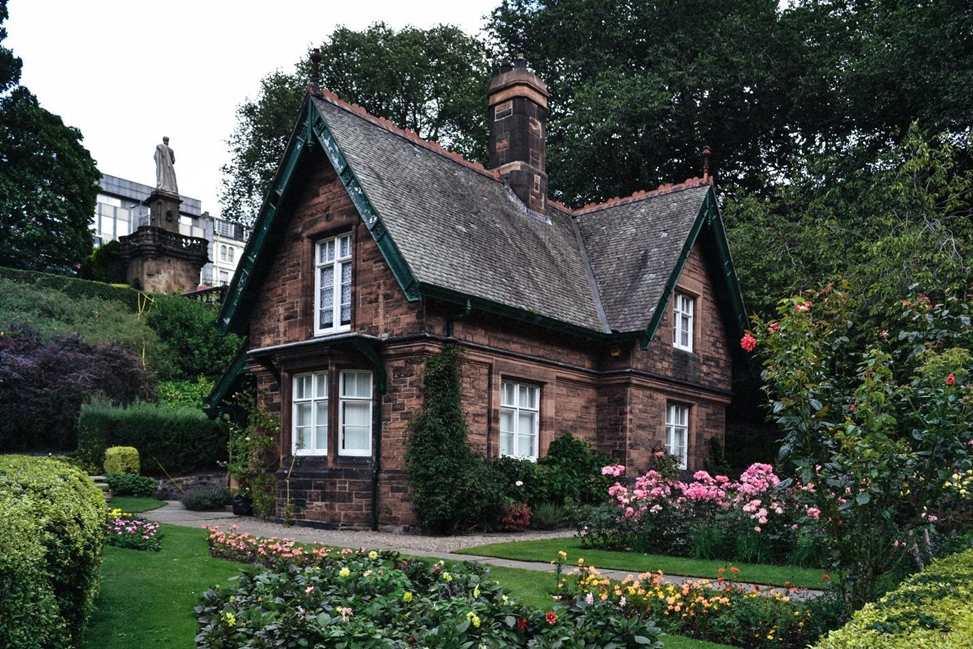
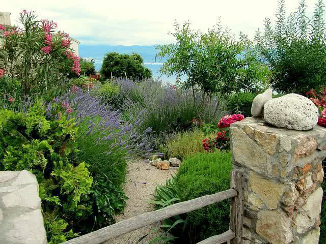
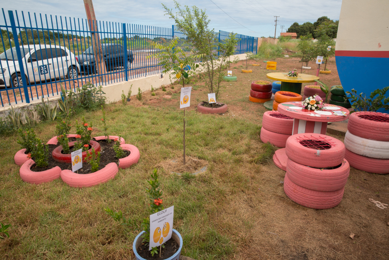

As principais características deste tipo de jardim são a simetria e o uso de formas geométricas, assim como a utilização de grama e árvores bem podadas. O estilo costuma também utilizar canteiros de flores, para dar um toque de cor à paisagem. O jardim clássico pode ser decorado com fontes, esculturas, colunas, bolas de pedra, arcos de ferro, tudo colocado em pontos cuidadosamente escolhidos. Esse tipo de jardim cria uma atmosfera de opulência e luxo.
O design de um jardim inglês é marcado pelas formas irregulares, assimetria, ausência de ângulos definidos e curvas suaves. O estilo inglês é um equilíbrio entre natureza e elementos artificiais. É esse contraste que cria a beleza da paisagem. Para criar relevos e corredores pitorescos, são utilizadas técnicas de jardinagem vertical e plantas de variadas alturas. O jardim inglês também se distingue pela abundância de flores. É comum decorar o ambiente com elementos de água como tanques, lagos ou riachos, mas também com bancos de materiais naturais e objetos vintage.

É uma composição de pedras, terracota e plantas que rodeiam uma piscina. Os vasos e jarros de barro são frequentemente utilizados para abrigar flores, arbustos e até mesmo pequenas árvores. O jardim mediterrâneo costuma estar localizado em terrenos de colinas, com terraços e muros de contenção. Os protagonistas desse tipo de jardim são os bancos pintados de branco, as áreas decoradas com mosaicos, os terraços de pedra e as escadas largas. No ponto central desses ambientes, costuma ficar um pátio.

A ideia por trás de um jardim ecológico é preservar a naturalidade de uma paisagem, sem alterá-la muito. A flora característica de uma área serve como base, nesses casos. As características do estilo ecológico são móveis simples feitos de madeira, trepadeiras, fogareiros e cabanas. A decoração do jardim é discreta: lanternas suspensas em árvores, comedouros de pássaros e artesanatos de trepadeiras.